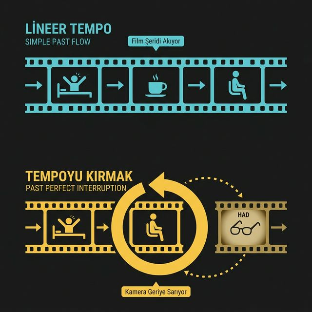

LİNEER TEMPO (AKSİYON AKIYOR)
I woke up, made coffee, sat down, and started reading.
Kamera sürekli ileri akar. Bir eylem biter, diğeri başlar. Zaman çizgisi mühürlenmiş log kayıtlarından oluşur, iz bırakmaz. (Tümü Simple Past)
TEMPOYU KIRMAK (HAD İLE GERİ SARMA)
I sat down to read, but I HAD forgotten my glasses upstairs.
Kamera aniden durur. İleri giden tempo kesilip aniden 'daha da geçmişte' bırakılan bir İZ'e (gözlüksüzlük durumu) geri dönülür. Past Perfect sadece resmi görünmek için değil, hikayedeki sırayı ve tempoyu kırmak için stratejik olarak kullanılır.
